Things To Do: Your Ultimate Bucket List
1. 7 Most Scenic Train Journeys In India You Should Take At Least Once

The sound of a train whistle blowing immediately transports us back to childhood, when the best memories were formed on train journeys.
Take the nostalgia train and set out to explore some of the most scenic train journeys in the country in the seat of a locomotive.
Go through the list of these most beautiful train rides in India and make sure you head to one of them, the one that you find to be truly out of this world.
You will realize the journey is nothing short of a dream. There’s mountains, waterfalls, rivers, plains, deserts and every possible landscape that you can imagine of.
They are spread across the northern frontier to the southern frontier.
Have a look!
• Darjeeling Toy Train
• Nilgiri Mountain Railway: Mettupalayam-Ooty-Coonor
• Himalayan Queen
• Golden Chariot Route: Bangalore (Karnataka) to Goa
• Poorna Express: Pune To Ernakulam
• Kashmir Valley Railway: Jammu To Baramulla
• Goa Express: Vasco Da Gama – Londa
2. Taste the finest wine from Sula Vineyards
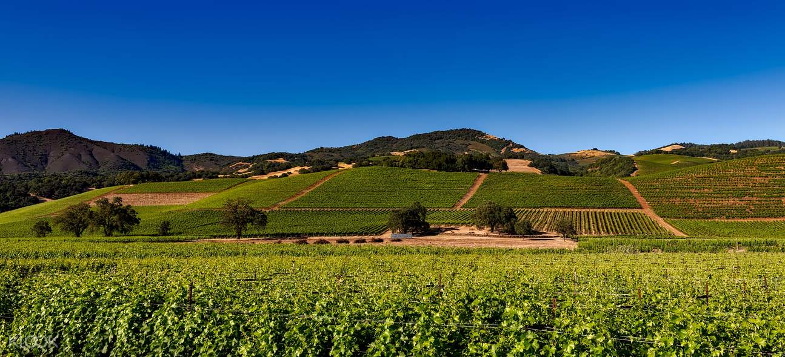
Only a few experiences are as special and mesmerizing as walking through a bustling winery and understanding the process of making wines from grape to glass. The Sula Vineyards is a famous winery that is located in Nashik, 180 kilometres to the northeast of Mumbai and is renowned for its varieties of grape wines, such as Chenin Blanc, Sauvignon Blanc, Riesling and Zinfandel. Sula Vineyards is home to sixty wineries and boasts of being the first ever winery in the entire nation. The Grape Stomping activity that takes place here between January and March is an added delight. Also, the vineyard has two restaurants that serve lip-smacking food, a gift shop and a bottle shop. The vineyards also house a resort to live in, a winery, and a unique tasting room in which people can taste different samples and varieties of wines that are produced at the winery.
3. Desert Safari
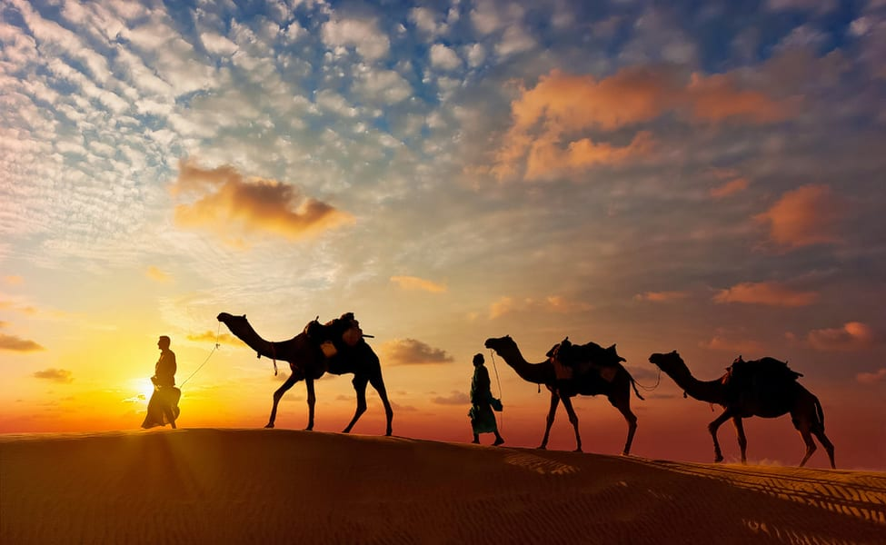
Comprising all major attractions in the desert, the camel safari in Jaisalmer is the most sought after activity as you plan for a desert safari in the dunes of the ‘golden city’. Sit on the back of a camel holding on to its hump as it takes you on a bumpy ride across the Thar. The ride takes you to the remote areas of the desert and presents you the best of flora and fauna. Also, you come across various settlements where the indigenous residents of the place live. Explore the wide riches of the desert and enjoy the picturesque sunset, which makes it certain that camel safari is the best desert safari in Jaisalmer. If you are a quickie, embark on a short camel safari in Jaisalmer and explore the beautiful dunes of Sam Desert. Soon after the ride, be prepared to behold one of the most beautiful sunsets behind the dunes. Head to the camp in the evening, and get a grand traditional welcome with aarti-tika and dhols. Enjoy the welcome drink along with the Rajasthani folk dance and music at your preferred desert safari camp in Jaisalmer.
4. Scuba Diving in Andaman Islands
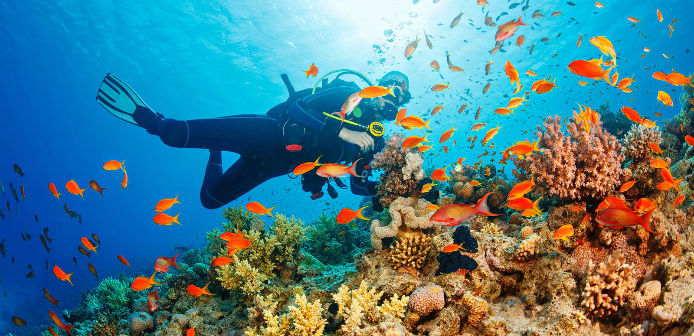
Scuba Diving in Andaman is one of the best diving experiences you can have in India. The sport offers swimming across colorful corals, beautifully patterned fishes, and seabed gardens in absolutely silent waters. The cluster of these splendid islands is all about silver shores embraced by playful ocean waves and are perfect for diving enthusiasts. But if you dare to go deeper, there’s another world inside the ocean that will leave you amazed and bedazzled. In Andaman, Havelock Island is one of the most famous places for scuba diving. A spot called Lighthouse is the best one to go night diving with a depth of 6 to 18 meters. The aquarium is a fringing reef spot is a beginner’s paradise that treats your eyes to colorful schools of fish. Mac Point, a spot with a depth of 10-14 meters is popular especially because one gets to spot Dugongs here. Barracuda City a rather unexplored destination for scuba diving lets you explore the deep secrets of marine wonderland as you spot colorful corals and a variety of fish, including Blue-spotted stingrays, Coralfish, and Surgeonfish.
5. Visit the Ellora Caves in Verul
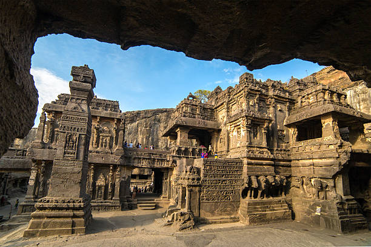
This complex of vertically-excavated Buddhist, Jain, and Hindu monolithic temples in India's Maharashtra providence illustrates a spirit of tolerance characteristic of ancient India. Covering an area more than 2 kilometers in size, the Ellora Caves are a massive and humbling tribute to faith and medieval-era workmanship in India. In fact, the term “caves” hardly does justice to the 34 Buddhist, Brahmanist and Jainist temples in Ellora, each painstakingly carved out of the mountainside and filled with delicate works of art. Many of them put much easier-to-construct buildings to shame with their elaborate design, demonstrating both the strength of religious conviction that went into their creation as well as the highly skilled craftsmen who participated. It is a feat that would be difficult to match even with modern techniques, and of course far less likely to be undertaken due to the cost and time it would take to create it. The caves feature art, temple and habitation space from three different religions, proving the level of tolerance and cooperation among the disparate religious groups in India at the time of their creation.
6. Walk on The Root Bridges of Cherrapunji
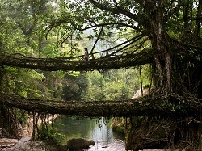
In the depths of North-Eastern India, within sight of the India-Bangladesh border, in one of the wettest places on earth, bridges aren’t built—they’re grown. The southern Khasi and Jaintia hills are humid and warm, crisscrossed by swift-flowing rivers and mountain streams. The living bridges of Cherrapunji, India are made from the roots of the Ficus elastica tree. This tree produces a series of secondary roots from higher up its trunk and can comfortably perch atop huge boulders along the riverbanks, or even in the middle of the rivers themselves. One special root bridge, believed to be the only one of its kind in the world, is actually two bridges stacked one over the other and has come to be known as the “Umshiang Double-Decker Root Bridge.”
7. Visit the Mysore Palace: Modest by day, illuminated majestically at sunset
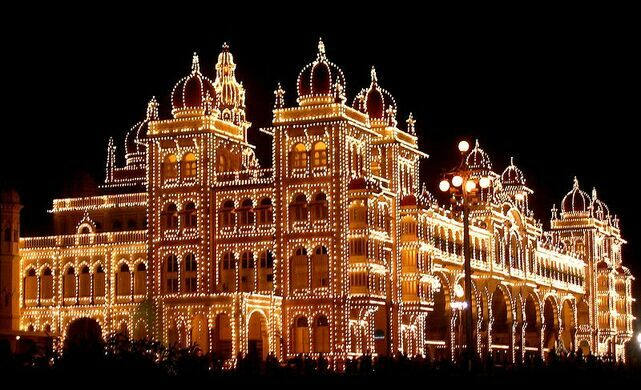
In a city famous for its many palaces, the former Royal residence known as Amba Vilas is an exceptionally grand building among grand buildings.
It is the fourth palace built on the same location since the beginning of the Wodeyar dynasty in 1399.
Designed by the British architect Henry Irwin who designed several other iconic buildings of British India, the palace is a masterpiece of Indo-Saracenic design, which blends together Hindu, Muslim, Rajput, and Gothic styles of architecture.
The current palace was designed to be erected on the remains of the earlier palace, which was destroyed by fire at the wedding ceremony of princess Jayalakshmmanni in 1897.
Construction was completed in 1912.
At night 97,000 light bulbs transform the building into a glowing spectacle.
Though the lighting happens at 7pm, crowds start to grow outside the gate by 6pm to witness light-up.
The palace complex also includes twelve Hindu temples. The oldest of these was built in the 14th century, while the most recent was built in 1953.
8. River Rafting in Rishikesh
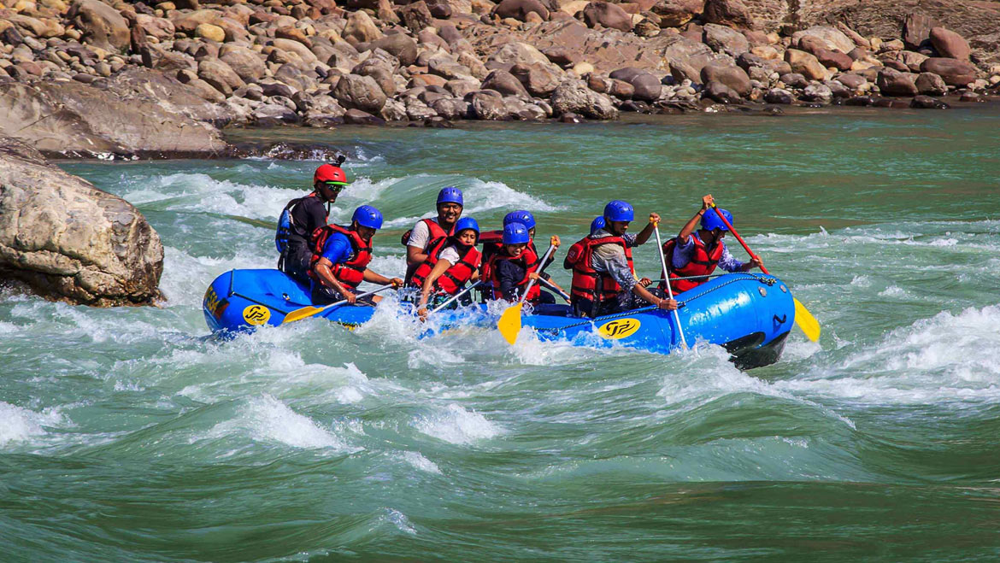
Rishikesh is the most popular center for river rafting in India which attracts thousands of adventure-seeking travelers every year. Rafting in Rishikesh is not only famous among Indians as a weekend getaway but also a popular spiritual and adventure destination for foreign tourists as well. The travelers can go for temple-hopping to the nearby shrines such as Shri Neelkanth Mahadev, Vashishtha Gufa, or pamper themselves with an exotic Ayurveda treatment. Either pay a short visit to the several assorted ashrams around Swargashram or relish the timeless beauty of the ancient temples such as Shatrughna Mandir, Bharat Mandir, and Lakshman Mandir that were enshrined by Guru Adi Shankaracharya.
9. Feel the Serentity and Divinity at Golden Temple, Amritsar
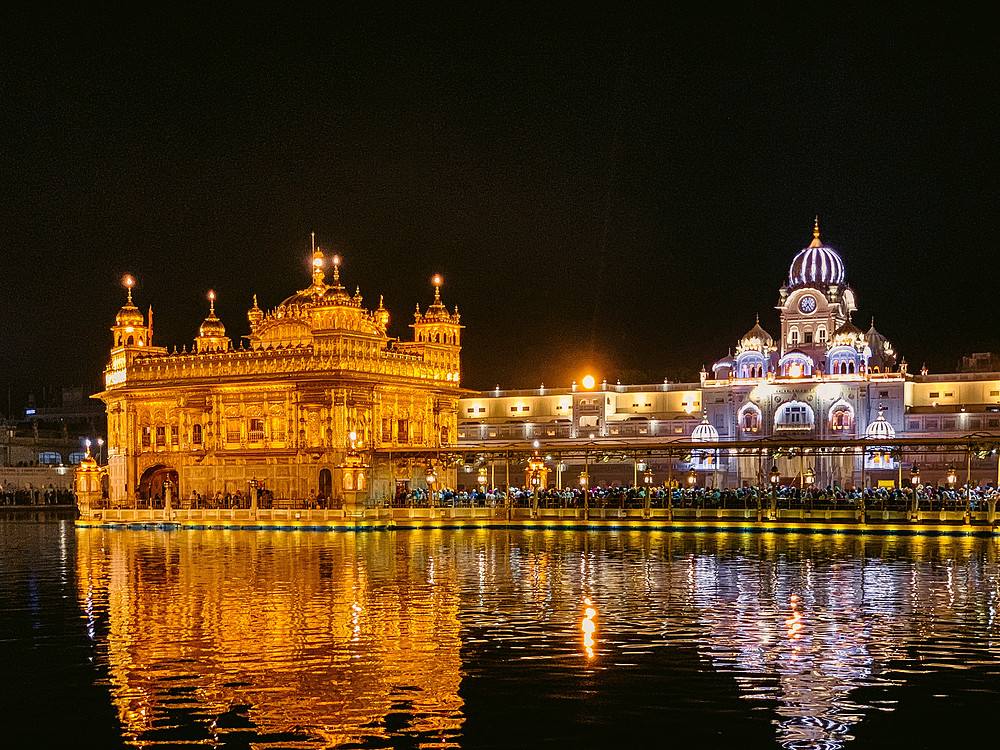
The Golden Temple is a spiritual and uplifting place to visit which exemplifies the history and values of the Sikh faith. Sitting on the marble floor with the view of the sanctum sanctorum in the wavy lake and the humming of the Guru Granth Sahib can be a spiritually cleansing and soothing experience. The feeding of over 70,000 visitors each day is a humbling experience. The surroundings are made exemplary clean and tidy, beautified.
10. Go biking in the mountains of Leh-Ladakh
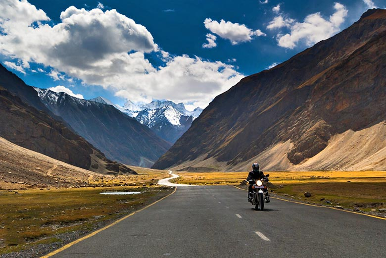
Aptly known as ‘the Land of high Passes’ Ladakh is one of the most unique and enchanting regions of India. This sparsely populated, vast landscape is a dream destination for adventure lovers worldwide. As the expedition is two-week long, we will have ample time to explore this vast cold desert at a slow and relaxing pace. A bike trip to Ladakh is not the easiest of things to accomplish but all its difficulty fades away in the face of how satisfying it is when you finish the whole thing and not just that...even while you're on it, even while you're riding all the way to Ladakh you're feeling amazing no matter how hard the terrain looks like. And then there are particular moments in the bike trip that make you feel extra spectacular, especially camping in Nubra and looking at Pangong lake. Waking up to a sunrise at Pangong Tso is one of the best visuals to feast your eyes on! The Leh Ladakh Bike Trip is an unprecedented chance to experience the charm of the region.
11. Shikara Ride in Kashmir's Dal Lake
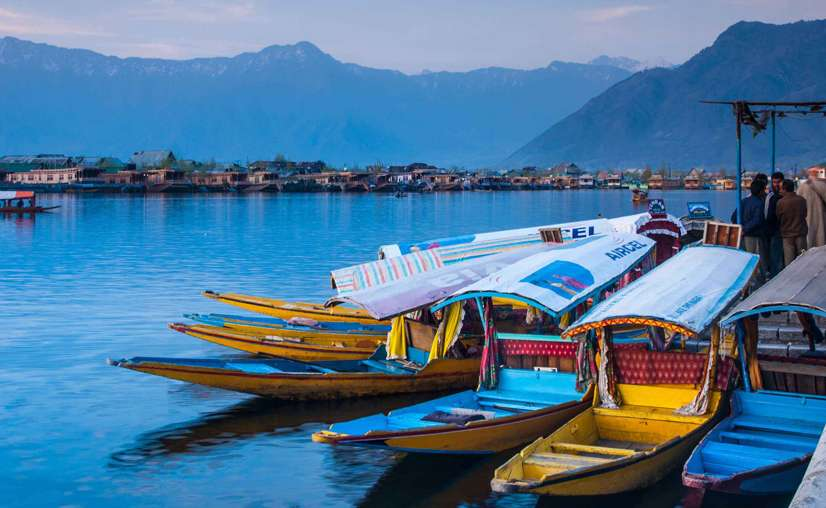
Dal Lake is one of the most prominent lakes of India.
Dotted with numerous beautiful sights, the city looks amazing in a canopy of landscaped flowering gardens, crystal clear lakes, magnificent structures, and bustling markets.
Amidst the heavenly view of a serene sheet of water, stands Srinagar’s jewel, Dal Lake.
This hillside lake is synonymous with the carved colourful wooden houseboats drifting casually through the placid waters and the misty peaks of the neighbouring Pir Panjal Mountains.
Engulfed in this beautiful world, lies one of the most exhilarating things to do in Srinagar, taking a ride on the ‘Shikara’ or the small wooden carved boat, usually seen at Dal Lake and Nagin Lake.
A Shikara ride is a thrilling experience for anyone who seeking a mix of nature and adventure in Srinagar.
Get wooed by the panoramic vistas of the Zabarwan range and the vastness of the lake, symphonized with the curling waves formed by the shikarawala’s rowing.
The prolific beauty of the surrounding mountains combined with the scintillating waters of the lake is an experience beyond words.
12. Garba Night and Kutch Festival
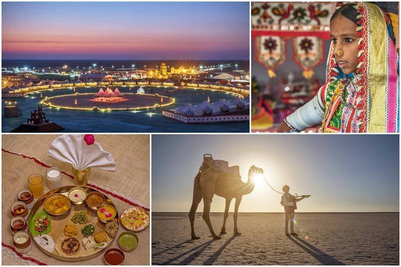
Rann Utsav is an awesome festival of Kutch, Gujarat, India. It is a Carnival of Music, Dance, nature beauty of White Rann where you can experience tent city luxury and much more. Visiting on Full Moon Day must be dream for every traveller. Kutch Rann Utsav is the shimmering landscape that gives the enchanting moments of this Fest, which feels like as Heaven On Earth during Festival Time. In fact, it’s a Family holiday destination to explore fun moments and store in cameras for life time. Rann utsav official dates announced, it will be from 1st November 2021 to 20 February 2022. There are plenty of things to do during ran festival stay including participation in Golf Cart, ATV Ride, Camel Cart Excursion, Paramotoring, Meditaiton, Yoga and Enjoying Gujarati Culture.
13. Hop on to a fun filled delicious walk and taste the undiscovered streetfood in Delhi
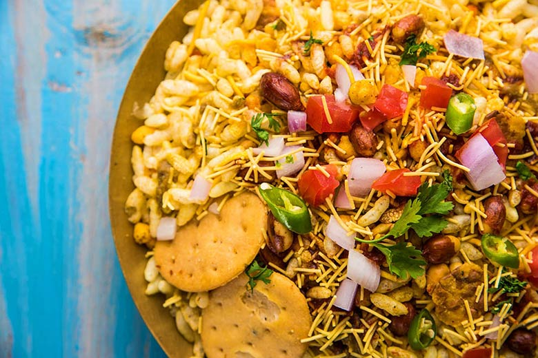
Delhi is a megacity bustling with people. It is overwhelming: the heat, dust, noise and crowds can make the most seasoned traveler wary.
But India’s capital is also a melting pot of history and culture, filled with exciting things to do and see, including markets, museums and cafés all influenced by the steady influx of traders and immigrants that have shaped the city for centuries.
Delhi’s culinary epicenter has undoubtedly been affected by the diversity as well.
Food here is a mix of many styles, cuisines, cultures and communities: Middle Eastern recipes brought by the Mughals are married to Punjabi and Sindhi ones originating in Pakistan and Iran.
Tibetan and North-East Indian flavours meanwhile add interesting twists. The result is a mind-boggling, tongue-tickling array of offerings that one can only find in Delhi.
Feeding millions of immigrant workers, shoppers, office goers, students and housewives, the Delhi street food served in these stalls is woven into the fabric of the city like its air and water.
There is no way you can experience the real Delhi without sampling its street treats, so get going.
14. Paraglide in Bir Billing, Himachal Pradesh
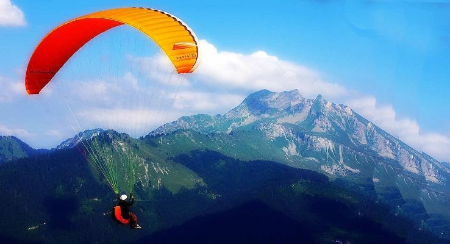
For years, paragliding in India had not been a popular choice. However, the recent years have seen a tremendous surge in the paragliding opportunities and people looking for this wonderful adventure sport that allows humans to live their most longing fantasy of flying. Bir Billing, among other paragliding spots in India, is a small village in Himachal Pradesh – famed worldwide – for hosting the first ever world cup of paragliding. After bringing exclusive enchiridions on rafting in Manali and Rishikesh, it becomes only fair to help you with essentials of paragliding in Bir Billing. Moreover, Bir Billing has also hosted the first ever World Cup of paragliding in world. The Bir Billing paragliding height, along with the climate of Bir Billing are the most suitable for any air borne gliding sport.
15. Taj Mahotsav
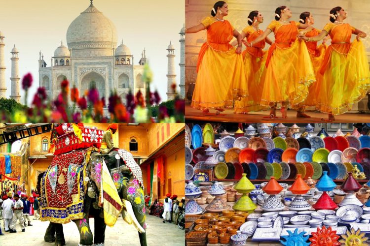
Taj Mahotsav, one of the most eagerly awaited festivals, is celebrated from 18th to 27th February every year at Shilpgram near the Eastern gate of "Taj Mahal". This 10 days long carnival is actually a vibrant platform that gives you information of India where you can find India’s rich arts, crafts, cultures, cuisine, dance and music. Taj Mahal is the most beautiful historical place of India which tells about incredible India. Taj Mahotsav is organized by Taj Mahotsav Committee presented by Commissioner, Agra Devision Agra.
That’s India.
Actually, that’s only a tiny slice of this country, a tiny, tiny glimpse into what awaits those who visit.
The possibilities are literally endless.The experiences involve a long list of educational, rewarding, and eye-opening activities and interactions that are unforgettable!